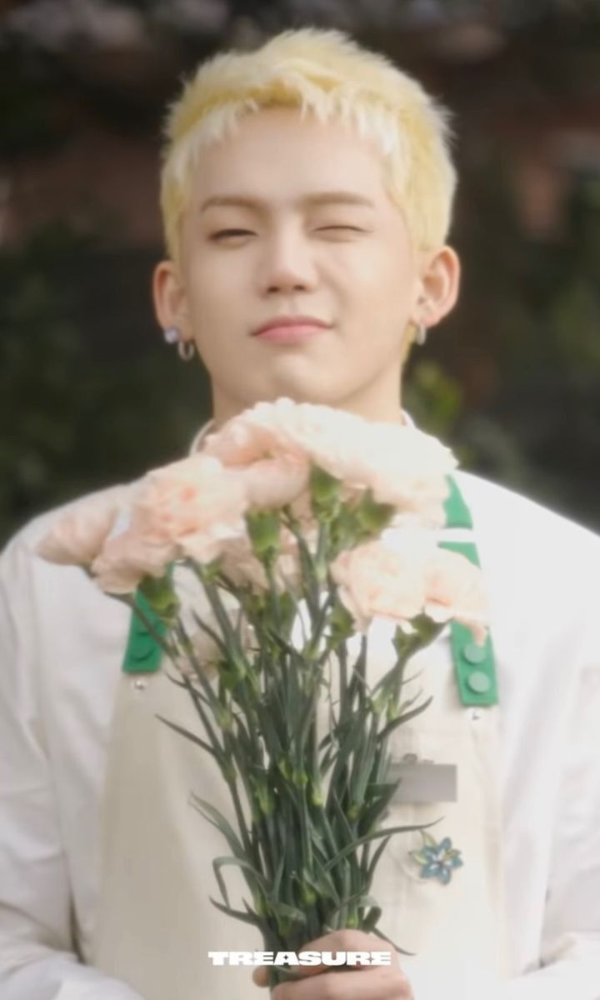

[🦔 Profile_HyunSuk.exe]
TREASURE 隊長 · RAPPER · 舞蹈
崔玹碩 CHOI HYUN SUK
1999.04.21 • 🦔

STAGE & REALITY
🔥 台上 YG 味最衝的那個，台下叫「奶崔」
崔玹碩身上有一種很典型的 YG 感，是迷路了也會被送回 YG 的孩子。不是靠衣服或妝造堆出來的，是站在那裡、rap 一開口就藏不住的那種。小奶音但咬字很狠，舞台上的虛勢和 swag 渾然天成。
「但團綜裡的崔玹碩是另一個人。被弟弟們鬧、被搶話、被當團欺，全程笑眯眯，經常在背景裡笑到畫面模糊。粉絲叫他『奶崔』不是沒道理的。粉絲寫他『台上很拽，台下很萌』。」
LEADERSHIP
👑 是大哥，但更像「媽媽」
崔玹碩是隊內大哥，也是第一代隊長。粉絲圈有個說法：志焄是爸爸，玹碩是媽媽。
- 寶石盒時期：弟弟們哭的時候，他會第一個跑過去，輕聲細語地安撫，不是敷衍的「別哭了沒事的」，是真的在哄。
- 成員們的依靠：Yoshi 說過，有煩惱的時候不管玹碩在哪，都會直接找他商量；Haruto 寫 rap 詞也經常找他聊；道榮說練習生時期玹碩一直很照顧他，給了他很多力量。
💬 但反過來，他自己難受的時候不太說。俊奎和炡禹在直播裡提過，希望玹碩不要一個人扛著，有辛苦的事也說給他們聽。
一直在照顧別人的人，其實也需要被照顧，但他好像不太習慣。
ATTITUDE
💧 練習時會凶，凶完會自己偷偷哭
有粉絲說他在練習時是「角度抓得很緊的嚴格隊長」。第一次 fan meeting 時對成員說了不少重話，後來感謝他們跟下來了。
然後花絮裡，SLOW MOTION 舞台待機時他看著台上的成員，自己眼眶紅了。第一次演唱會最後一天，對成員說「謝謝你們少睡覺那麼努力」，說著說著就哭了。
「隊長嚴厲但心軟」這個設定不算新鮮。崔玹碩讓人覺得真實的點在於：他凶是真的，哭也是真的，不是演給誰看的。
TALENT & SKILLS
⚡ 實力不用粉絲吹
- 選秀認證：《MIXNINE》170 人裡拿過第一，投票投出來的。後來寶石盒第七位出道。
- RAP 實力：隊內高音 rapper，和 Haruto 的低音正好對位。發音準、聲音大，上高音不太破，演唱會大場子優勢明顯。flow 不是一成不變的，快的慢的都能來。
- 舞蹈天賦：舞蹈也是隊內上位圈，BOY 的 dance break 是他站 center。朴振英在 MIXNINE 評價過他的拍子感是天生的，身體很自然地跟著節奏走。不懂舞蹈術語也看得懂一件事：他跳舞的時候看起來很開心。
💡 被問到「最強的武器是什麼」，他答的不是 rap 不是舞蹈，是「自我（ego）」。這句話很崔玹碩，他知道自己的核心競爭力是那股「我就是我」的勁兒。
FUN FACTS
👾 一些沒什麼用但很崔玹碩的事
7️⃣ 極度喜歡數字 7：足球背號、入社順序、各種亂七八糟的都跟 7 有關
💜 紫色狂粉：喜歡紫色，喜歡到和成員一起從頭到腳穿紫色拍照
⚽ 足球狂粉：房間牆上掛的都是球衣，看球衣能認出球隊
🍔 漢堡狂魔：成員叫他「최버거」（崔漢堡）
👻 超膽小：怕蟲子，怕鬼，小時候看《女高怪談》嚇暈過
🧸 收藏家：收集手辦和夾子，喜歡漫威
🤣 笑點極低：經常在別人說話的背景裡笑到畫面模糊
這些小事堆在一起，就是一個很具體的人。不是「完美隊長」，是一個喜歡紫色漢堡足球數字 7 但怕蟲子的、會凶弟弟也會為弟弟哭的人。
ROADMAP
📌 入坑路線
| 順序 | 看什麼 | 看什麼點 |
|---|---|---|
| 1 | 《JIKJIN》舞台直拍 | 台上氣場，先建立第一印象 |
| 2 | 《VolKno》RAPPER Unit | rap 硬實力，三人同框不虛 |
| 3 | 團綜 / 直播片段 | 台下被弟弟欺負的反差 |
| 4 | 隊長幕後 / 彩排花絮 | 嚴厲隊長和心軟本人的切換 |
| 5 | 採訪聊「7」和「ego」 | 性格內核，從喜歡舞台到喜歡這個人 |
🎯 一句話總結
第一眼是 YG 惡童，第二眼是團欺媽媽，第三眼發現這兩個東西根本不矛盾——
他對舞台有多狠，對這些人就有多軟。
[📹 Fancam_HyunSuk.mp4]
MCOUNTDOWN 4K